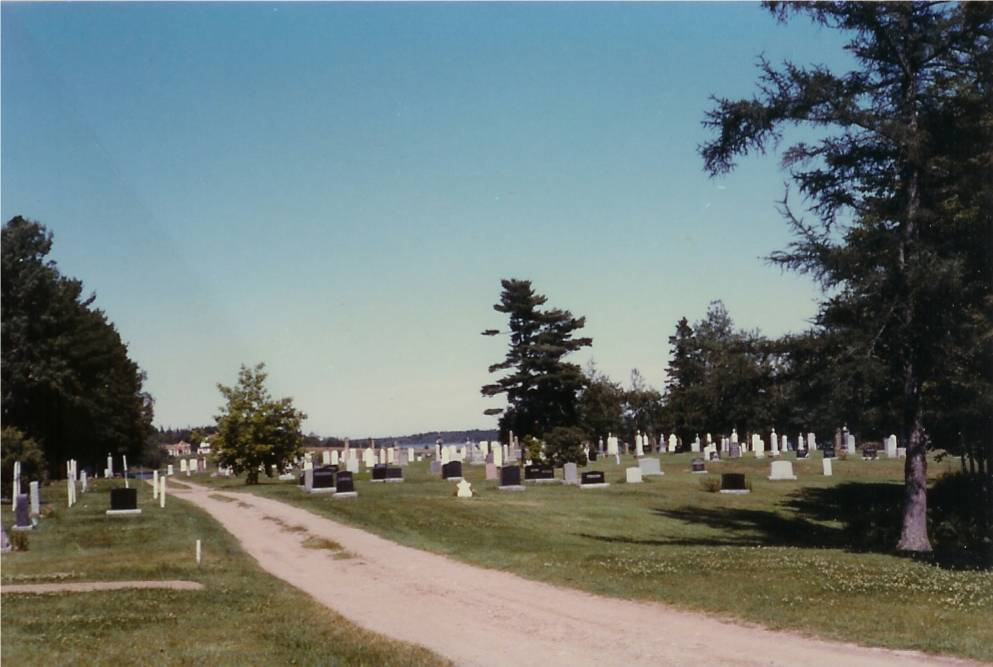
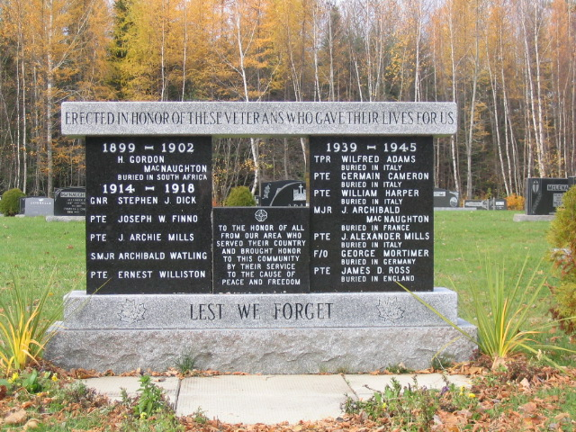

Glendenning Collection

Veterans’ Memorial erected in memory of soldiers who died in the service of their country. Names include:
The Black River Cemetery is situated on a point of land known as Gunn’s Point, and later Church Point; it was part of Lot No. 4 originally granted to Enoch Gunn on June 3, 1812. The property was purchased by Enoch Godfrey in 1820 and the first burial, I believe, was that of Enoch Godfrey’s father-in-law, Robert MacBeath in 1923. A more detailed history of the church and the cemetery can be found in an article by Ernie MacLean in the Spring 2001 Issue of Generations. Although the nearest church was in Bay du Vin, other burials of Black River folk took place at Gunn’s Point even though the land was privately owned. In 1836, a new church, St. Stephen’s Presbyterian, was opened in an area now part of the cemetery.
Following Church Union in 1925, St. Stephens United Church gave full burial rights to those former members who decided to continue in the Presbyterians tradition. Today, this sacred plot is considered a community burial ground.
Check wording of letter